Ressources
Le blog EMASPHERE
Digitalisation, consolidation, pilotage financier : ce que nous apprenons sur le terrain, avec nos clients.
88 articles
-
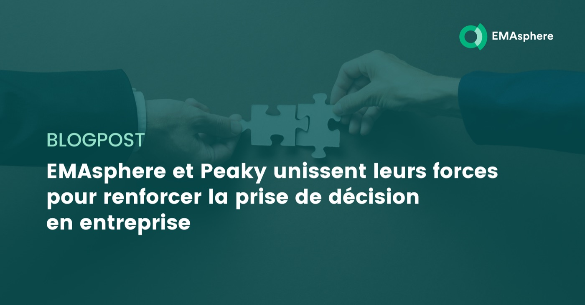
EMASPHERE et Peaky s'allient pour renforcer la prise de décision La plupart des entreprises ont un plan d'un côté et une réalité de l'autre. Les stratégies sont définies, les budgets fixés, puis la réalité… 2 juillet 2026Lire l’article -
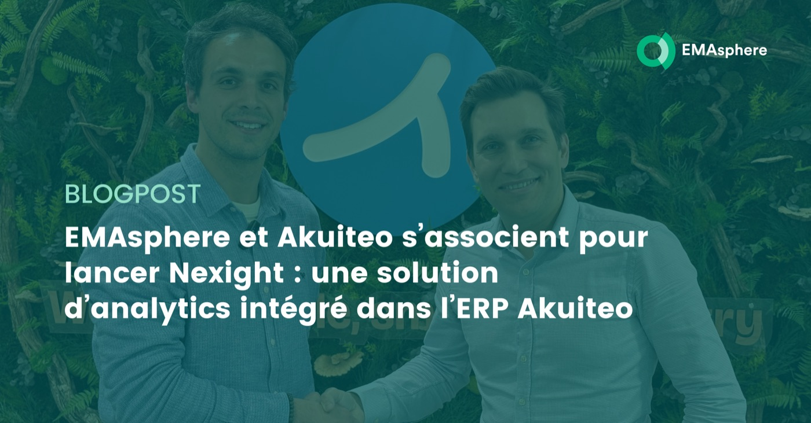
EMASPHERE et Akuiteo lancent Nexight : solution d'analytics intégrée En mars 2026, EMASPHERE et Akuiteo ont officialisé leur partenariat avec un objectif clair : développer une solution de reporting et… 2 juin 2026Lire l’article -
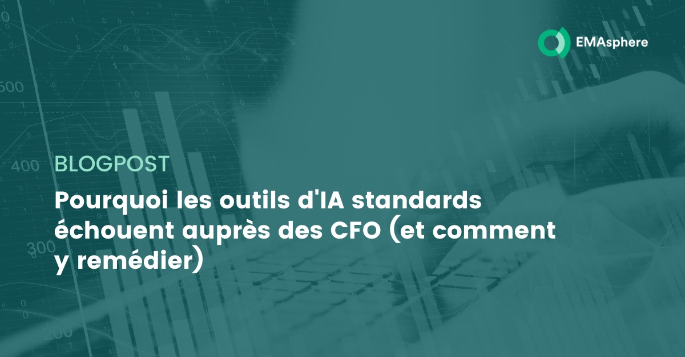
Pourquoi les outils d'IA standards échouent auprès des CFO (et comment y remédier) L’Intelligence Artificielle générative a fait une entrée fracassante dans le monde de l'entreprise. ChatGPT, Claude ou Gemini promettent de… 19 mai 2026Lire l’article - Pourquoi les outils de BI ne sont plus adaptés à une Direction Financière à l’heure de l’IA La fonction finance a connu trois grandes révolutions technologiques. Nous avons quitté l'ère du **papier** et des registres manuels pour… 19 mai 2026Lire l’article
-
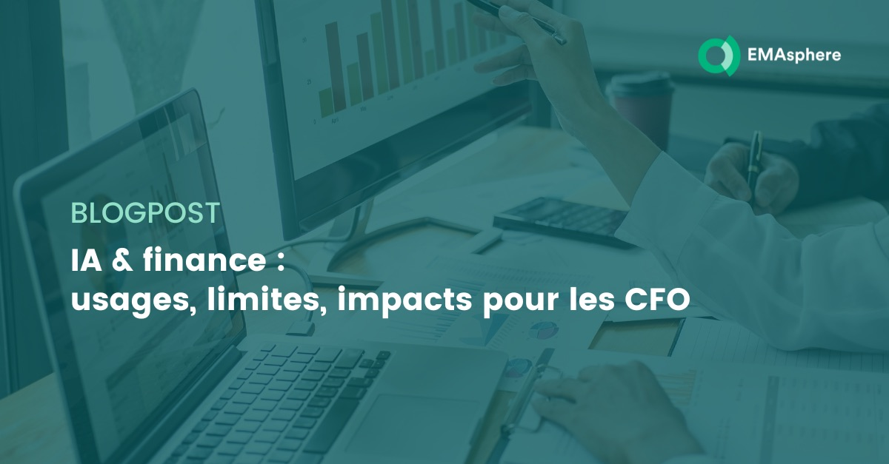
IA et Finance : usages, limites et impacts pour les CFO en 2026 Il n’est plus l’heure de se demander s’il faut intégrer l’IA dans le quotidien des directions financières, mais plutôt comment en tirer une… 13 mai 2026Lire l’article -
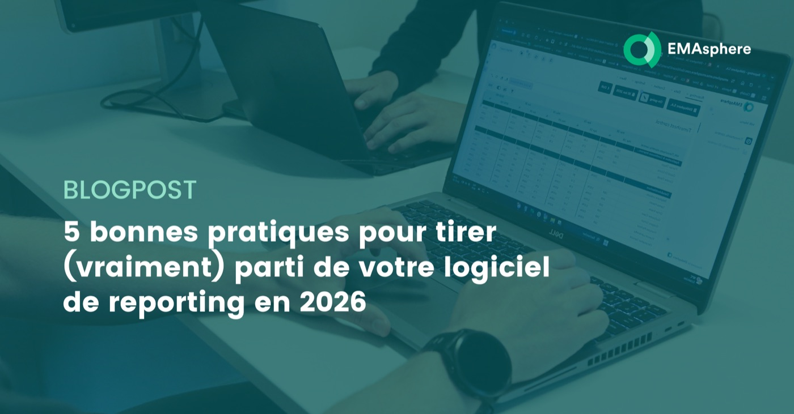
5 bonnes pratiques pour tirer (vraiment) parti de votre logiciel de reporting en 2026 En 2026, le rôle de la fonction finance ne se limite plus à produire des chiffres, comme le précise l’étude menée par EMASPHERE auprès de… 14 janvier 2026Lire l’article - Comment répondre aux 3 enjeux clés d’un SaaS : churn, turnover et scalabilité ? Les entreprises SaaS évoluent dans un environnement à forte volatilité : la concurrence est dense, les technologies se transforment à un… 14 janvier 2026Lire l’article
- RECCI x EMASPHERE : L’alliance de l’expertise et de la technologie pour un pilotage stratégique Le paysage économique de 2026 ne laisse plus de place à l'improvisation. Selon l'étude “Priorités 2026 des Directions Financières” menée par… 12 janvier 2026Lire l’article
-
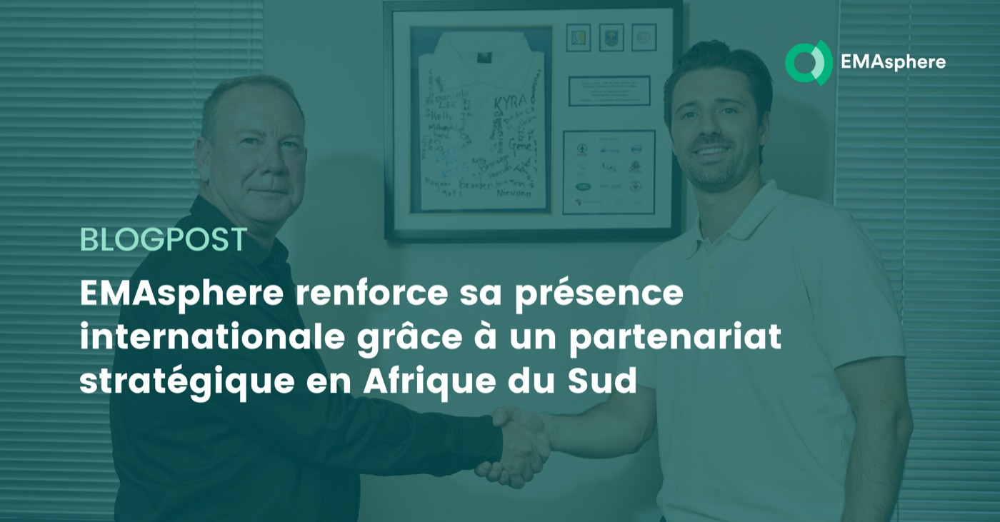
EMASPHERE renforce sa présence internationale grâce à un partenariat stratégique en Afrique du Sud EMASPHERE fait son entrée sur le marché sud-africain en annonçant un partenariat stratégique avec GreatSoft, l'un des principaux… 19 décembre 2025Lire l’article - DAF 2.0 : De l’expert des chiffres à l’influenceur stratégique Chez EMASPHERE, nous croyons que le rôle du DAF connaît l’une des transformations les plus passionnantes du monde de l’entreprise… 4 décembre 2025Lire l’article
-
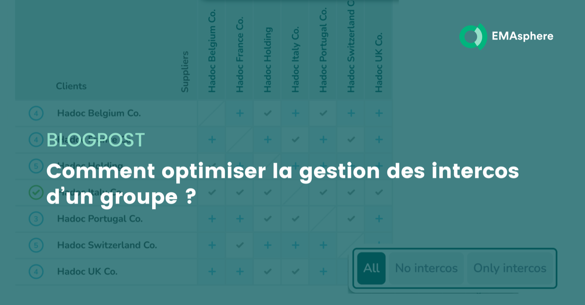
Comment optimiser la gestion des intercos d’un groupe ? Pour avoir une gestion de la performance juste et fiable au niveau du groupe, il est nécessaire de gérer les** transactions… 13 novembre 2025Lire l’article - Une journée au cœur de l’événement TOP DAF Lyon 2025 Lancement de l'édition lyonnaise 2025 de TOP DAF. 7h30, les portes s’ouvrent sur un lieu emblématique : l’Hôtel-Dieu de Lyon. Cet édifice… 21 octobre 2025Lire l’article
- Gérer les imprévus de votre groupe hôtelier ! Dans un secteur aussi exigeant et compétitif que l’hôtellerie, chaque décision compte. Que ce soit en Europe, en Afrique, aux États-Unis ou… 8 octobre 2025Lire l’article
- Les 10 raisons pour lesquelles les entreprises choisissent EMASPHERE Quand il s’agit de choisir un logiciel de reporting financier et opérationnel, les options ne manquent pas. Mais chez EMASPHERE, ce sont nos… 12 septembre 2025Lire l’article
- Et si l’été offrait l’opportunité aux CFO et CEO de reprendre la main sur leur reporting ? Plus de **45 % des dirigeants investissent aujourd'hui dans la digitalisation de leurs processus financiers**. Leur objectif : gagner en… 11 juillet 2025Lire l’article
-
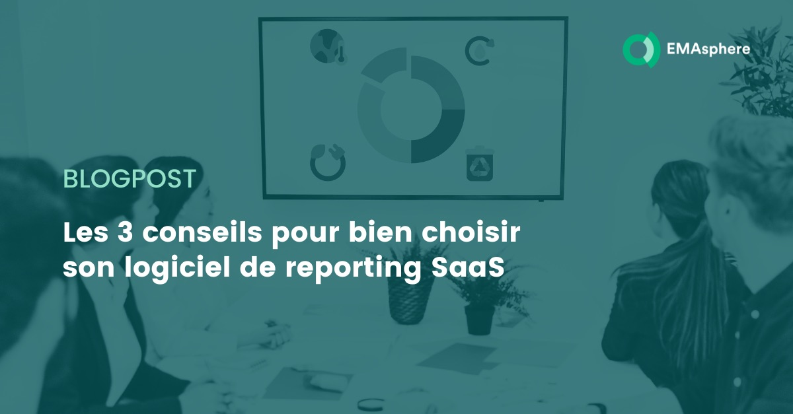
Les 3 conseils pour bien choisir son logiciel de reporting SaaS Chez EMASPHERE, notre solution de reporting est utilisée par 100% des managers de chaque département de l’entreprise. Alors, pour mieux… 18 juin 2025Lire l’article -
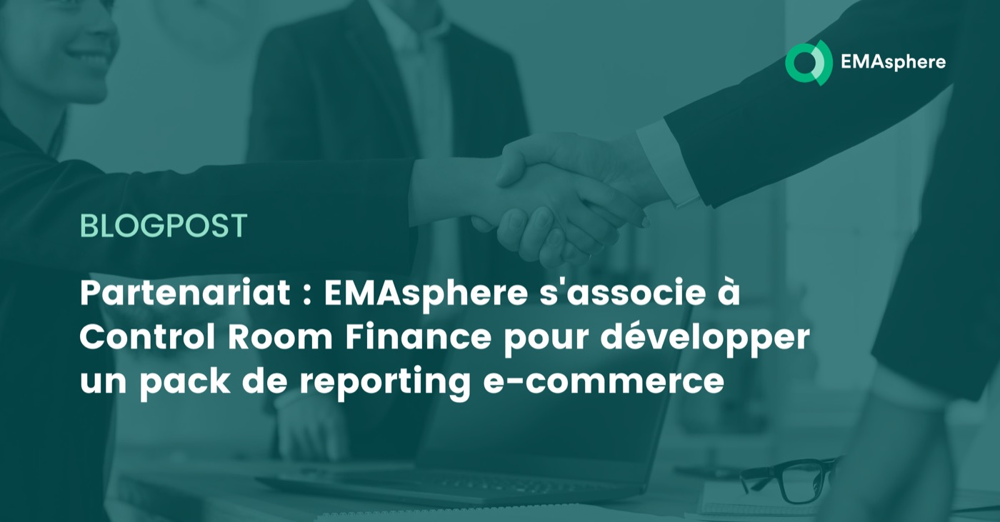
Nouveau partenariat : EMASPHERE s'associe à Control Room Finance pour développer un pack de reporting e-commerce EMASPHERE annonce son partenariat avec Control Room Finance pour créer un pack de reporting dédié aux défis du secteur e-commerce. 13 juin 2025Lire l’article -
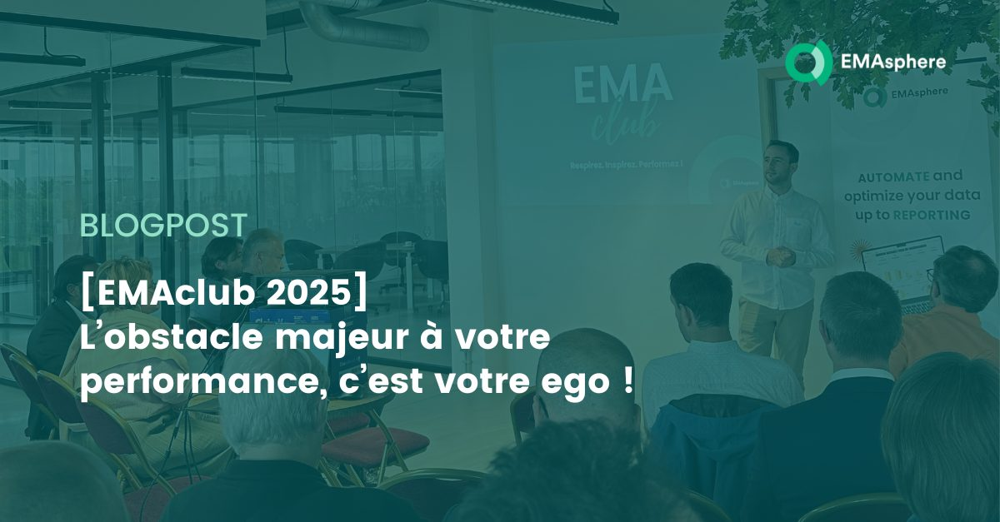
Zoom sur l'EMAclub 2025 : L'obstacle majeur à la performance, c'est l'ego ! C’est le conseil avisé que nous a **donné Marine Simonis, vice-championne du monde d’apnée 2024**, lors de sa conférence à **l’EMAclub… 11 juin 2025Lire l’article - Partenariat : EMASPHERE s'associe à Smart IT, principal intégrateur Odoo au Royaume-Uni **EMASPHERE annonce un partenariat stratégique avec Smart IT pour renforcer le marché britannique ** 1 octobre 2024Lire l’article
-
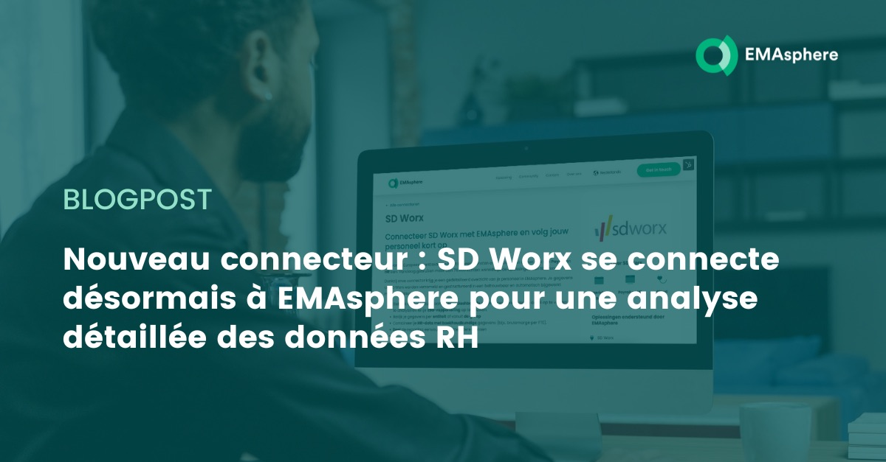
Nouveau connecteur : SD Worx se connecte désormais à EMASPHERE pour une analyse détaillée des données RH **Ce n'est pas une surprise pour les CFO que les coûts de personnel peuvent représenter jusqu'à 80 % des coûts d'une entreprise. Par… 17 septembre 2024Lire l’article -
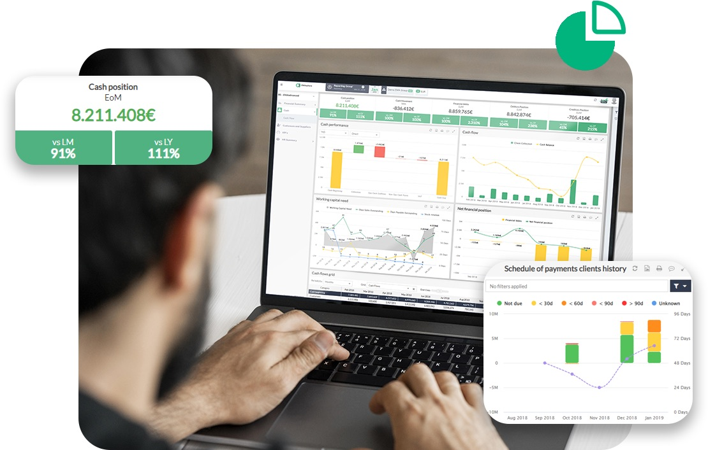
Ce qu'il faut savoir sur le reporting ESG La responsabilité environnementale, sociale et de gouvernance (ESG) est devenue un impératif incontournable pour les entreprises. Le… 26 avril 2024Lire l’article -
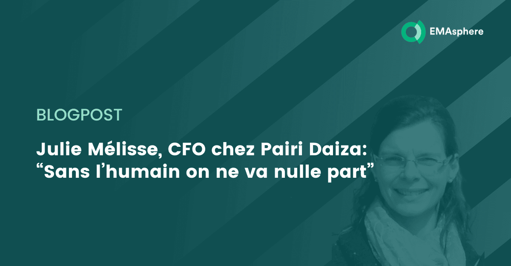
Julie Mélisse, CFO chez Pairi Daiza : “Sans l’humain, on ne va nulle part” **Julie Mélisse, invitée sur le podcast Once Upon a Business, nous livre les secrets du travail de directrice financière et de la gestion… 24 avril 2024Lire l’article -
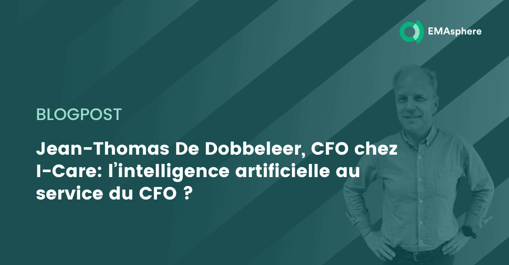
Jean-Thomas De Dobbeleer, CFO chez I-Care : l’intelligence artificielle au service du CFO ? **De l’histoire d’I-Care à l’importance de l’intelligence artificielle (IA) dans son poste de directeur financier, Jean-Thomas De Dobbeleer… 24 avril 2024Lire l’article - La stratégie de pricing : la nouvelle arme dont les CFO doivent s’emparer **Saviez-vous que le prix était le plus gros levier de rentabilité pour une entreprise ? Pourtant, il s’agit d’un élément trop souvent… 26 février 2024Lire l’article
-
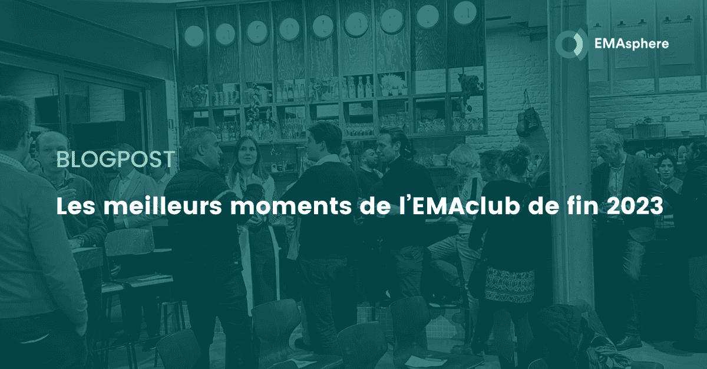
Les meilleurs moments de l'EMAclub de fin 2023 Deux fois par an environ, les clients et partenaires d'EMASPHERE peuvent profiter d'une soirée enrichissante qui leur est dédiée… 19 décembre 2023Lire l’article - Comment l'intelligence artificielle peut aider le département financier ? Le monde financier évolue à une vitesse fulgurante, et les directions financières cherchent constamment des moyens d'optimiser leurs… 19 décembre 2023Lire l’article
-
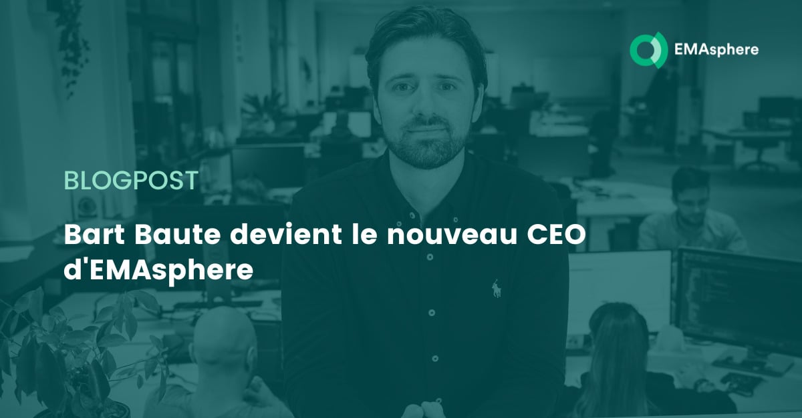
Bart Baute devient le nouveau CEO d'EMASPHERE Candidate au titre de Scale-up de l’année 2022, EMASPHERE a vu le jour il y a dix ans, avec l’ambition de rendre obsolètes les fichiers… 15 novembre 2023Lire l’article - Start-up : comment gagner la confiance des investisseurs Dans le monde des start-ups, chaque minute compte. Et pourtant, saviez-vous que les start-ups passaient en moyenne 10% de leur temps… 25 octobre 2023Lire l’article
-
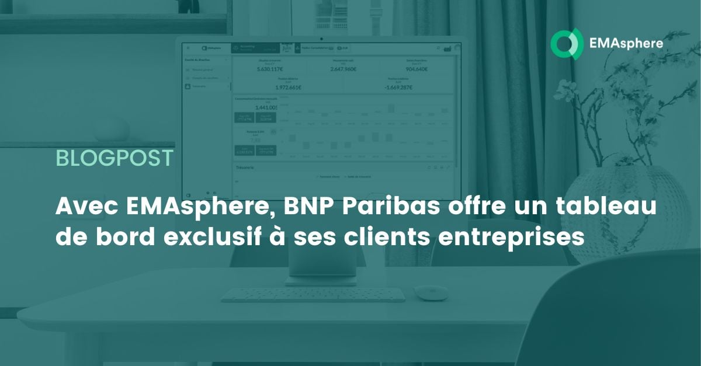
Vous êtes client entreprises chez BNP Paribas ? Souscrivez à un tableau de bord exclusif ! Après BNP Paribas Fortis en Belgique, EMASPHERE est aussi disponible pour les clients entreprises de BNP Paribas en France. Ces derniers… 23 octobre 2023Lire l’article - Comment centraliser toutes vos données en un seul logiciel de reporting L'univers financier connaît une évolution rapide depuis ces dernières années, ce qui présente de nombreux défis majeurs pour les directeurs… 8 septembre 2023Lire l’article
-
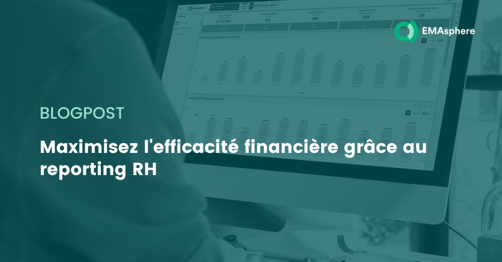
Maximisez l'efficacité financière grâce au reporting RH Dans un monde où la gestion financière évolue rapidement, la maîtrise des coûts opère comme un pivot central pour la pérennité des… 28 août 2023Lire l’article -
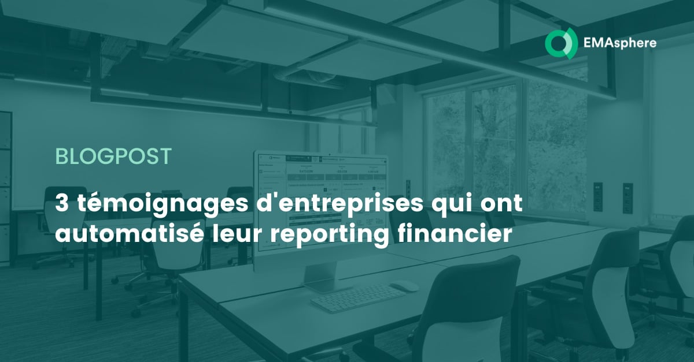
3 témoignages d'entreprises qui ont automatisé leur reporting financier Pour les directeurs financiers, chaque minute compte précieusement dans leur quête incessante de performances optimales. Cependant, les… 24 août 2023Lire l’article -
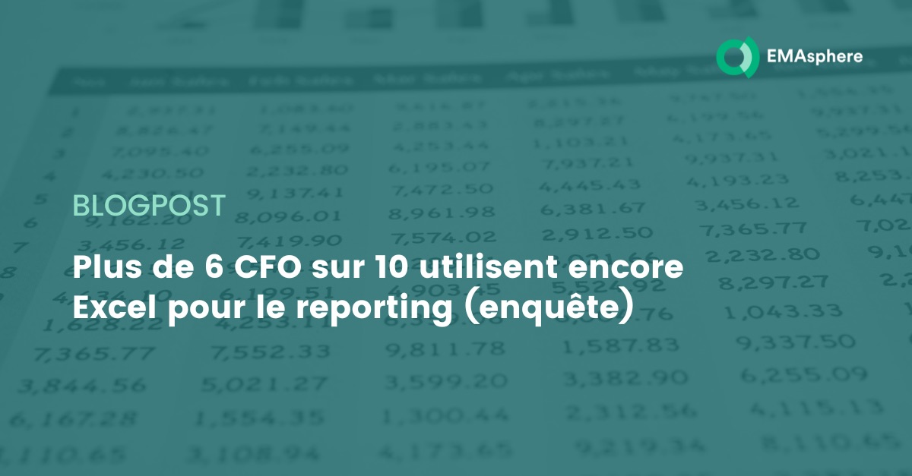
Plus de 6 CFO sur 10 utilisent encore Excel pour le reporting En 2023, 65% des CFO préfèrent toujours Excel pour leur reporting financier, d'après l'enquête d'EMASPHERE auprès de 62 répondants incluant… 26 juillet 2023Lire l’article -
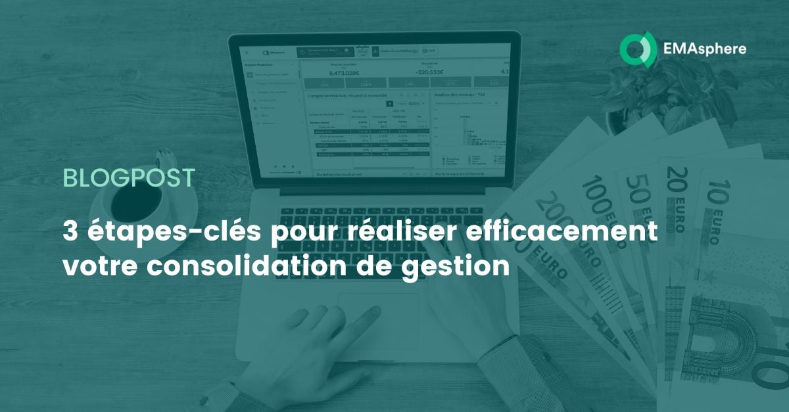
3 étapes pour réaliser efficacement votre consolidation de gestion **La consolidation de gestion est un processus essentiel pour optimiser la performance financière d'un groupe de sociétés. La consolidation… 17 juillet 2023Lire l’article -
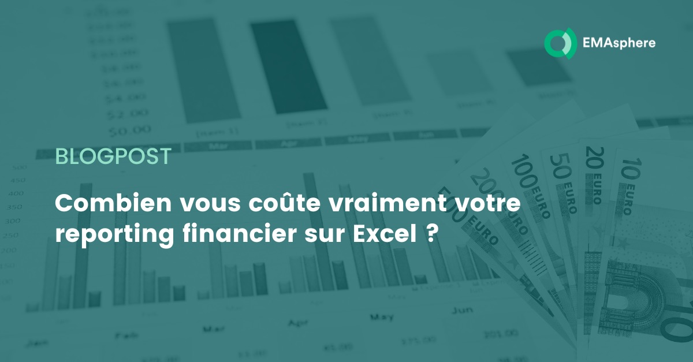
Combien coûte réellement un reporting financier sur Excel à votre entreprise ? Vous êtes-vous déjà demandé combien coûte la réalisation de votre reporting financier à votre entreprise ? Si comme deux tiers des CFO en… 17 mai 2023Lire l’article -
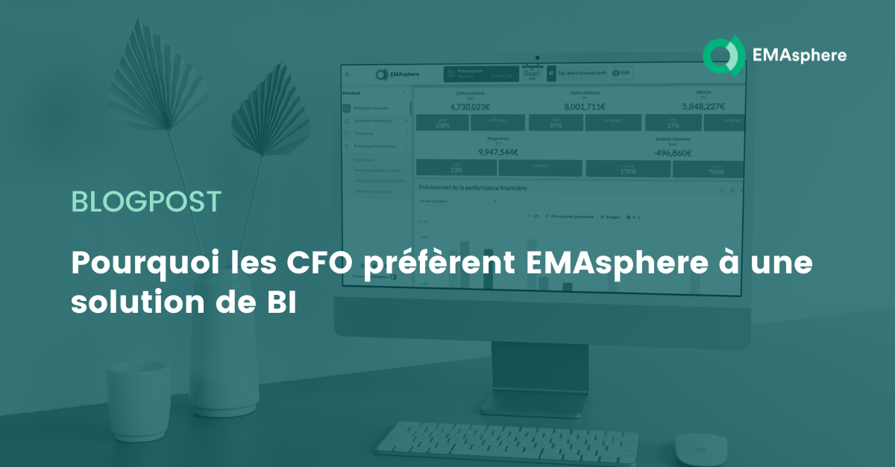
Pourquoi les CFO préfèrent EMASPHERE à une solution de BI **9 CFO sur 10 investiront dans la digitalisation en 2023, a révélé la dernière étude de PwC et DFCG. La question du choix d’une solution… 22 février 2023Lire l’article - Inflation, digitalisation : voici les priorités des CFO en 2023 Près d’un quart des directions financières se disent inquiètes pour l’année 2023. En cause, l’inflation qui se place en tête de gondole des… 31 janvier 2023Lire l’article
- Nouveau partenariat : EMASPHERE et BDO combinent leur expertise Les données sont partout et constituent une source précieuse d'informations. Mais sans structure et sans contexte, ce n'est qu'une grosse… 16 novembre 2022Lire l’article
- Quelles sont les qualités d'un bon CEO ? Comment devenir un leader inspiré et inspirant ? Marc Vossen, l’ancien CEO de NGroup tout fraîchement retraité, s’attaque à la question dans… 18 octobre 2022Lire l’article
-
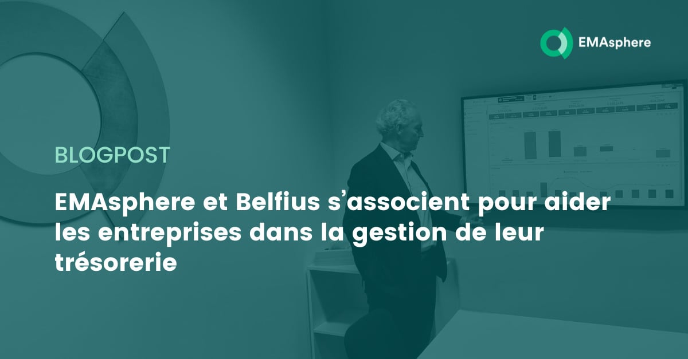
Partenariat EMASPHERE & Belfius : optimiser la gestion de trésorerie Dans un contexte économique incertain qui impacte directement la trésorerie des entreprises, Belfius s’est rapprochée d’EMASPHERE, une… 29 septembre 2022Lire l’article -
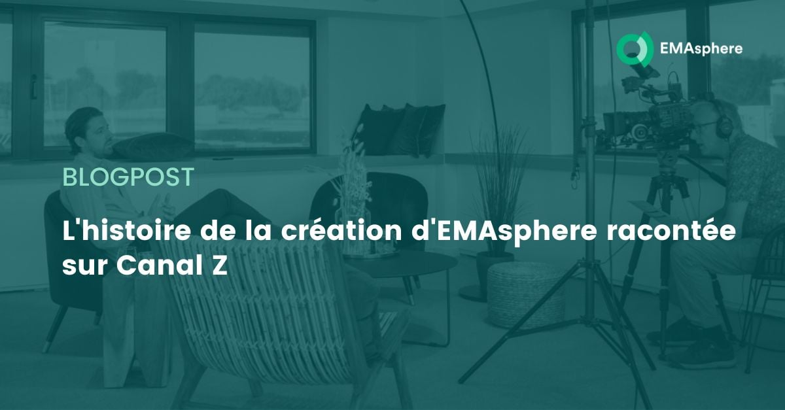
L’histoire de la création d’EMASPHERE racontée sur Canal Z **Vous voudriez économiser 80% de votre temps pour vous consacrer pleinement à l’analyse et à la prise de décisions éclairées ? Canal Z a… 13 septembre 2022Lire l’article -
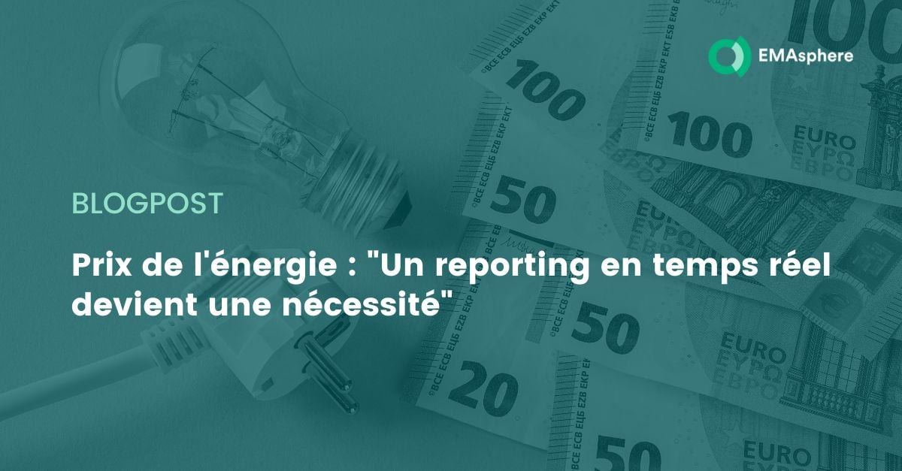
Explosion du prix de l'énergie : comment réagir en tant que financier ? **Avec l’explosion des prix des matières premières, des coûts salariaux et des tarifs de l’énergie, les entreprises doivent se montrer… 2 août 2022Lire l’article - 4 astuces pour être un CFO productif **Être productif, c’est l’objectif de tout CFO. Mais comment font vos confrères pour y parvenir ? Quelles sont leurs bottes secrètes ?… 25 juillet 2022Lire l’article
- 3 conseils incontournables des start-up qui réussissent Vous êtes à la tête d’une start-up, scale-up ou autrement dit, une entreprise à forte croissance. Les risques d’échec, vous les connaissez.… 15 juillet 2022Lire l’article
- Pourquoi les CFOs abandonnent-ils Excel ? Chaque jour, des responsables financiers décident d'abandonner leur reporting financier réalisé sur Excel. En général, les raisons qui… 24 mars 2022Lire l’article
-
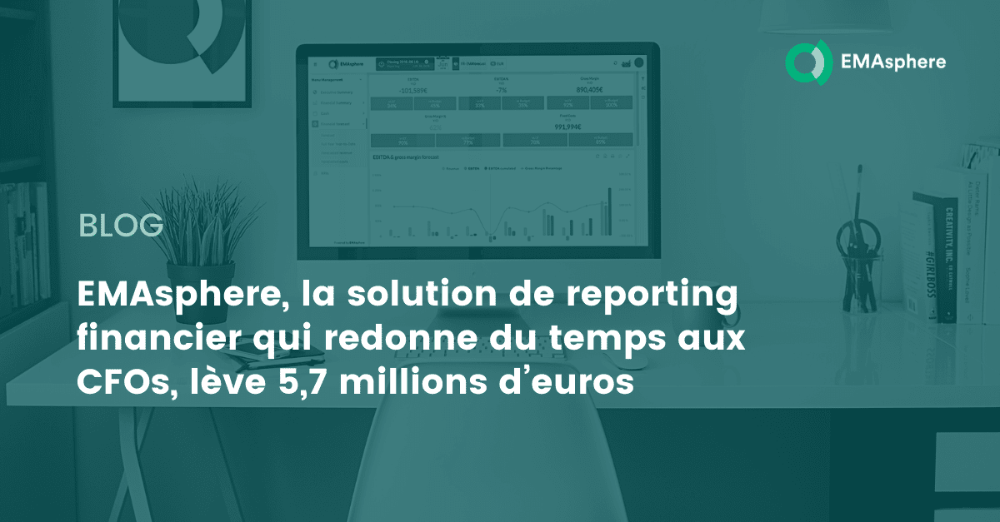
EMASPHERE, la solution de reporting financier qui redonne du temps aux CFOs, lève 5,7 millions d’euros **EMASPHERE, la plateforme qui redonne aux CFOs le contrôle sur leur reporting au travers de données à jour et fiables, annonce avoir levé… 28 janvier 2022Lire l’article -
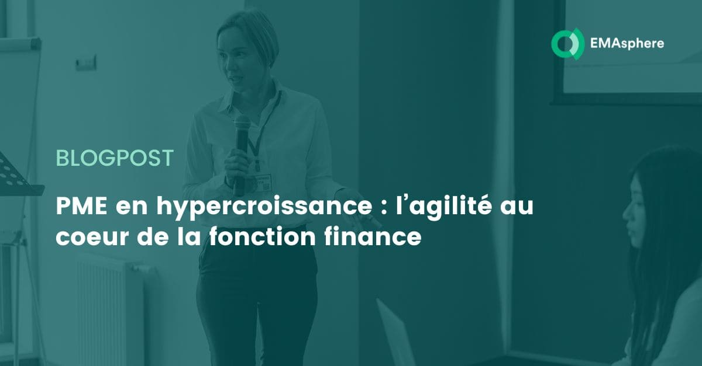
PME en hypercroissance : l’agilité au coeur de la fonction finance Travailler au sein du département financier d’une PME en hypercroissance est une expérience enrichissante, synonyme de développement rapide… 6 janvier 2022Lire l’article - Reporting consolidé : économisez jusqu’à 67% de votre temps Une entreprise aux multiples entités juridiques a besoin de consolider ses données comptables afin d’obtenir un reporting consolidé.… 16 décembre 2021Lire l’article
- Communiquer avec votre conseil d'administration grâce au reporting Vous êtes aussi pris(e) par le temps que le sont les membres de votre conseil d’administration (CA) mais souhaitez néanmoins leur délivrer… 4 novembre 2021Lire l’article
- Vos questions les plus fréquentes sur la solution EMASPHERE (FAQ) Cette FAQ (Foire Aux Questions) vise à répondre aux questions que nous recevons le plus souvent. 23 septembre 2021Lire l’article
-
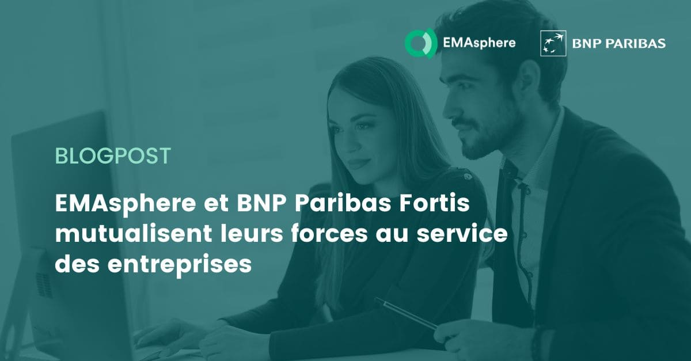
EMASPHERE et BNP Paribas Fortis mutualisent leurs forces au service des entreprises **En s’associant à EMASPHERE, BNP Paribas Fortis fait désormais bénéficier ses clients entreprises d’une plateforme digitale pour des… 9 septembre 2021Lire l’article - Comment créer efficacement un budget prévisionnel multi-entités ? Vous le connaissez, ce sentiment d’inquiétude signe que la date fatidique approche. Et oui, la saison des budgets arrive à grands pas !… 26 août 2021Lire l’article
-
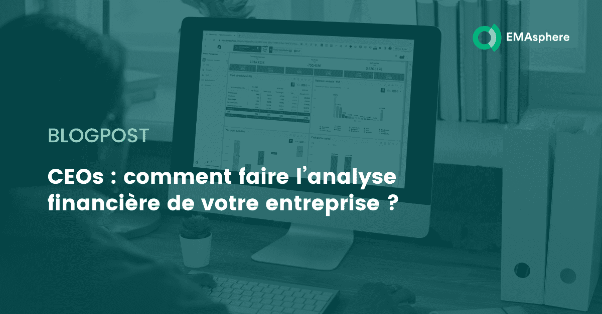
CEOs : comment faire l’analyse financière de votre entreprise ? Avez-vous déjà essayé les lunettes d’un(e) autre ? Si c’est le cas, vous le savez : pour y voir clair, chacun(e) ses verres ! 5 août 2021Lire l’article - Notre guide des meilleurs logiciels SaaS Le Software as a Service, ou SaaS, est un modèle de distribution de logiciel. L’idée est d’**héberger le logiciel chez son concepteur, et… 22 juillet 2021Lire l’article
- 7 indicateurs commerciaux à suivre absolument Toutes les entreprises désireuses d’évoluer se fixent des objectifs commerciaux. C'est pourquoi elles s'appuient ensuite sur des indicateurs… 15 juillet 2021Lire l’article
-
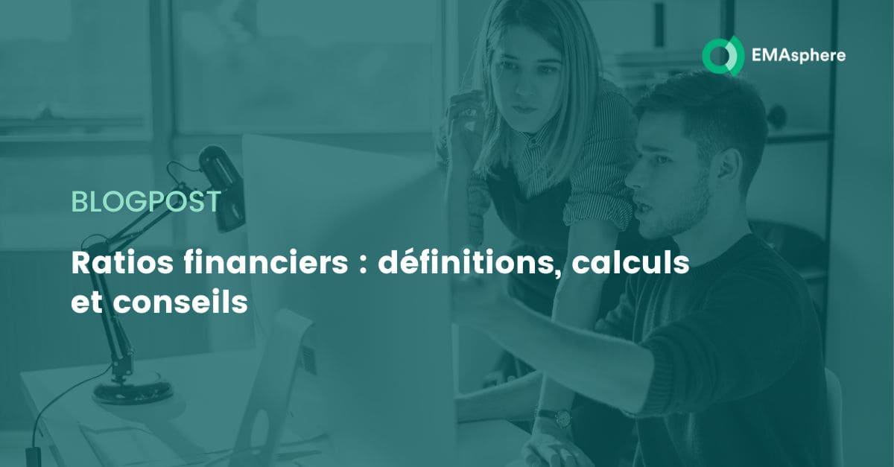
Ratios financiers : définitions, calculs et conseils Choisir ses ratios financiers, c’est un peu comme ajuster la portée de ses jumelles. Il faut trouver le bon réglage pour voir plus ou moins… 8 juillet 2021Lire l’article -
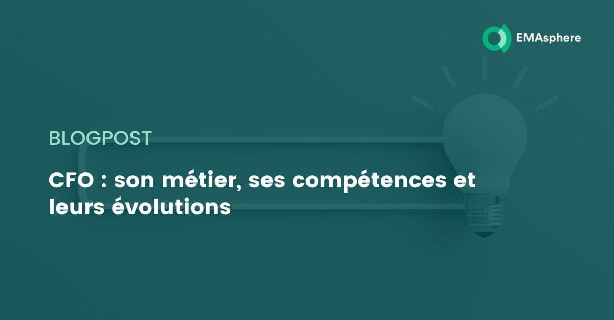
CFO : son métier, ses compétences et leurs évolutions Cette citation nous a questionné sur un phénomène que nous observons : l’évolution des fonctions de CFO. 18 juin 2021Lire l’article -
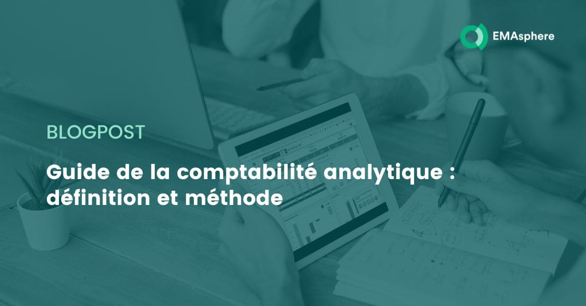
Guide de la comptabilité analytique : définition et méthode Portez-vous des lunettes de vue ? Des lunettes de soleil ? Dans un cas comme dans l’autre, vous le savez : il y a un monde entre l'”avant”… 11 juin 2021Lire l’article - Tableaux de bord RH : méthode et KPIs à suivre Vous êtes en vacances. Vous faites partie d’un groupe de randonneurs. Votre but du jour : atteindre tous ensemble une chute d'eau… 4 juin 2021Lire l’article
- Comment recruter un directeur administratif et financier Vous êtes à la recherche d’un(e) DAF ? Ou bien vous y songez ? Nous vous avons préparé un guide afin de vous aider à trouver le/la… 7 mai 2021Lire l’article
-
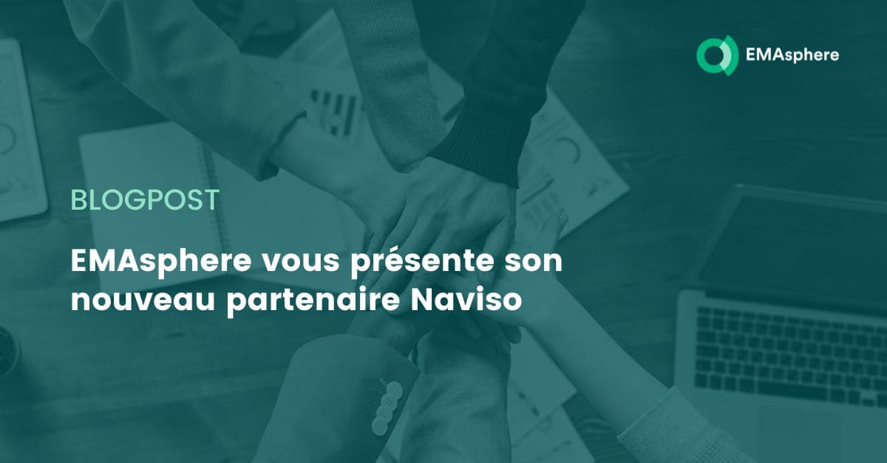
EMASPHERE vous présente son nouveau partenaire Naviso Naviso rejoint notre communauté de partenaires intégrateurs ! 5 mai 2021Lire l’article -
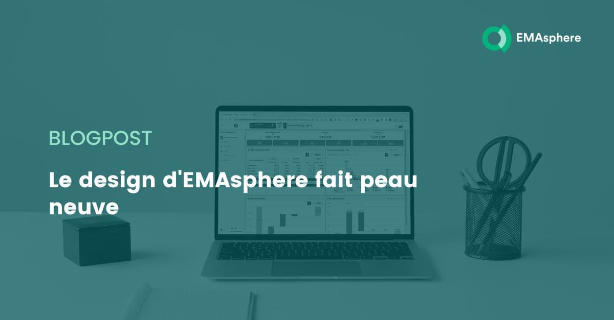
Le design d'EMASPHERE fait peau neuve CFO, CEO, expert(e) du chiffre, client(e) ou futur(e) client(e), ou tout simplement curieux(se), nous sommes ravis de partager avec vous la… 27 avril 2021Lire l’article -
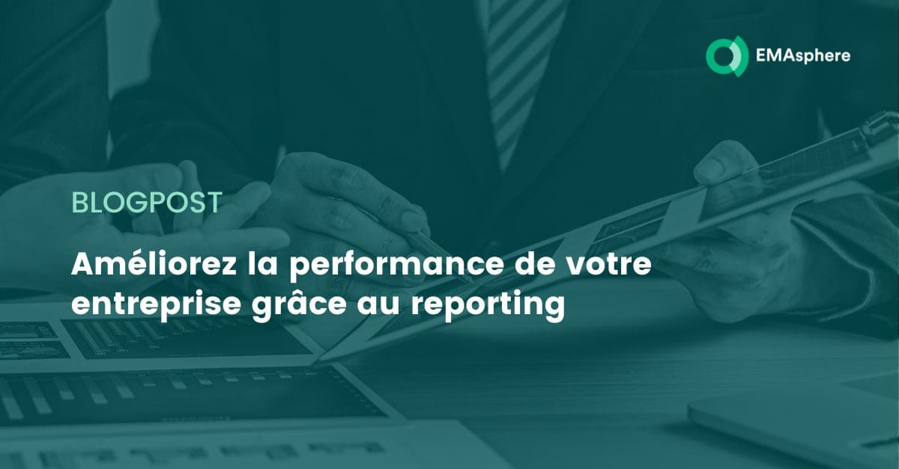
Améliorez la performance de votre entreprise grâce au reporting Le reporting est devenu l’une des activités qui occupent le plus les dirigeants d’entreprise. Et à raison ! Il peut avoir un impact très… 23 avril 2021Lire l’article -
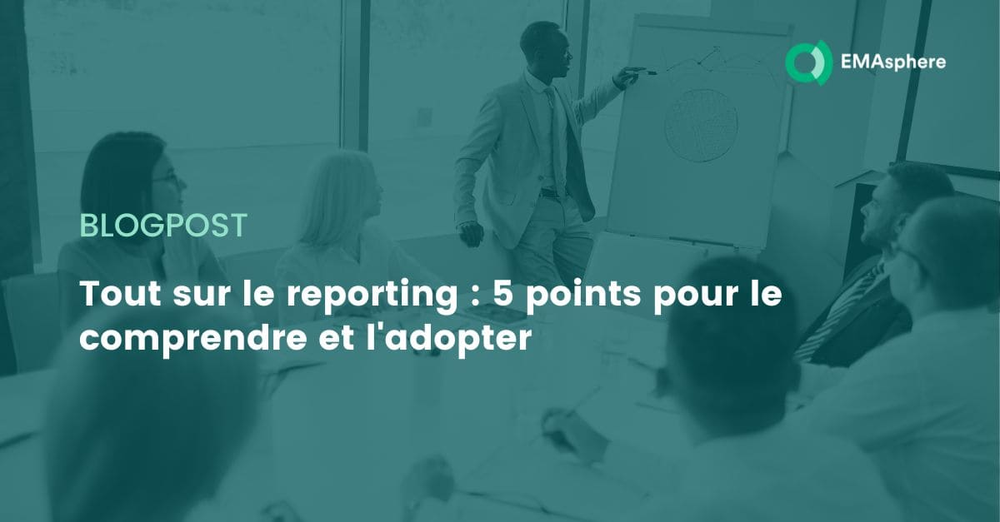
Tout sur le reporting : 5 points pour le comprendre et l'adopter Le reporting est à l’entreprise ce que l’eau fraîche est à la survie : un non-négociable. 16 avril 2021Lire l’article -
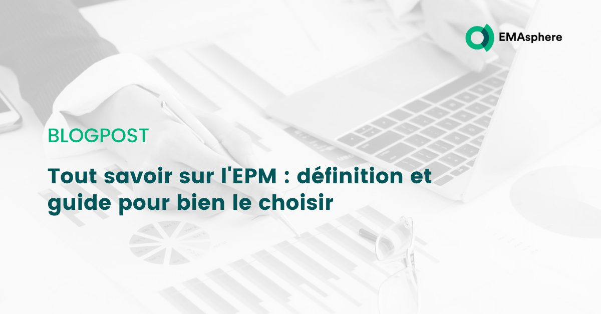
Tout savoir sur l'EPM : définition et guide pour bien le choisir Que diriez-vous d'un raccourci pour (bien) choisir votre EPM ? Suivez le guide. 9 avril 2021Lire l’article -
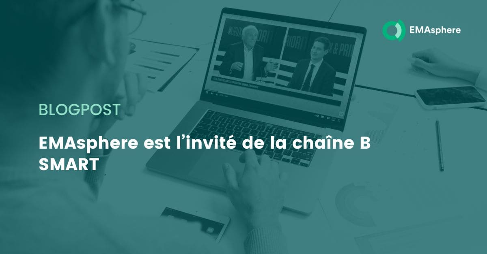
EMASPHERE est l’invité de la chaîne B SMART Il y a quelques jours, Paul Guilleré, Regional Manager France d’EMASPHERE était l’invité de Jean-Marc Sylvestre, journaliste de l’émission… 7 avril 2021Lire l’article -
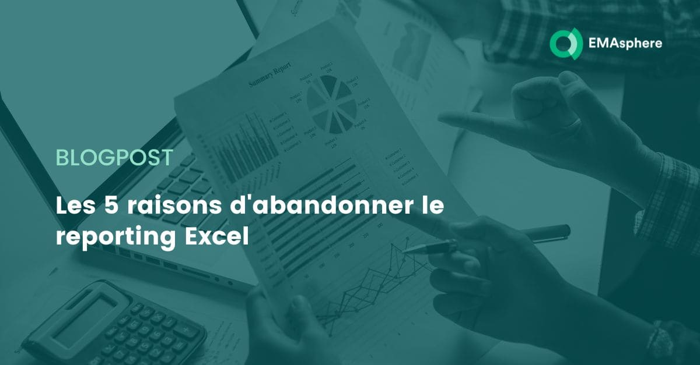
Les 5 raisons d'abandonner le reporting Excel Les données ont un rôle de plus en plus important dans les entreprises, tous secteurs confondus. Elles affluent désormais de toutes parts.… 2 avril 2021Lire l’article -
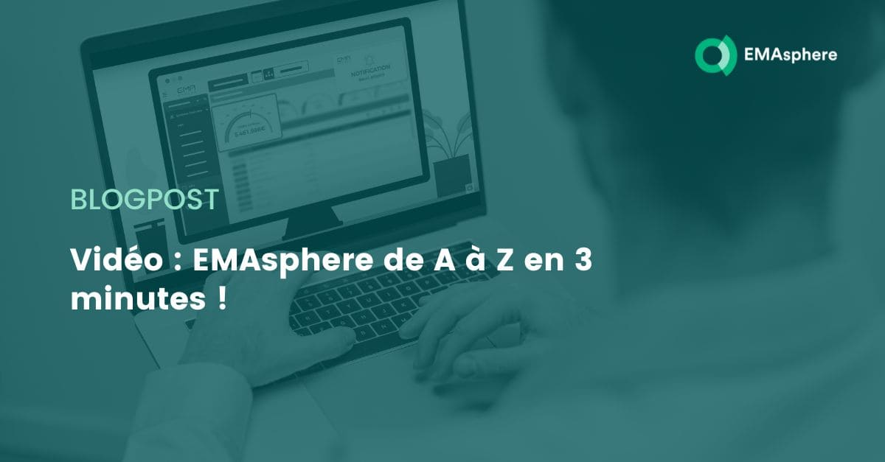
Vidéo : EMASPHERE de A à Z en 3 minutes ! Dans cette vidéo, découvrez EMASPHERE à travers Marc, directeur administratif et financier chez Hadoc, une entreprise employant une centaine… 1 avril 2021Lire l’article -
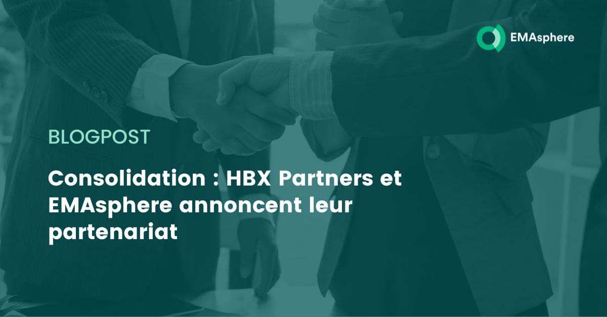
Consolidation : HBX Partners et EMASPHERE annoncent leur partenariat Dans cette interview, découvrez qui est HBX Partners, comment la société accompagne ses clients sur les sujets de consolidation légale et la… 10 mars 2021Lire l’article - Guide des meilleures solutions FinTech pour CFO Avez-vous déjà essayé de courir un marathon en chaussettes ? Probablement pas. Mais imaginons un instant. En pratique : c'est possible, mais… 8 mars 2021Lire l’article
-
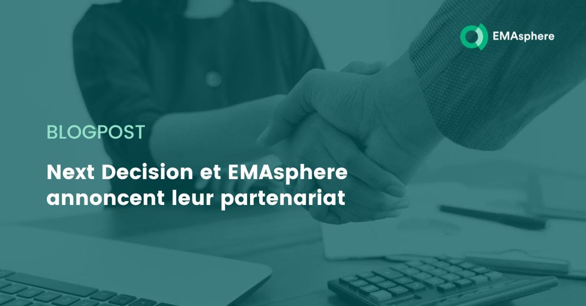
Next Decision et EMASPHERE annoncent leur partenariat **Notre communauté de partenaires intégrateurs s'agrandit avec l’arrivée de Next Decision ! ** 28 janvier 2021Lire l’article -
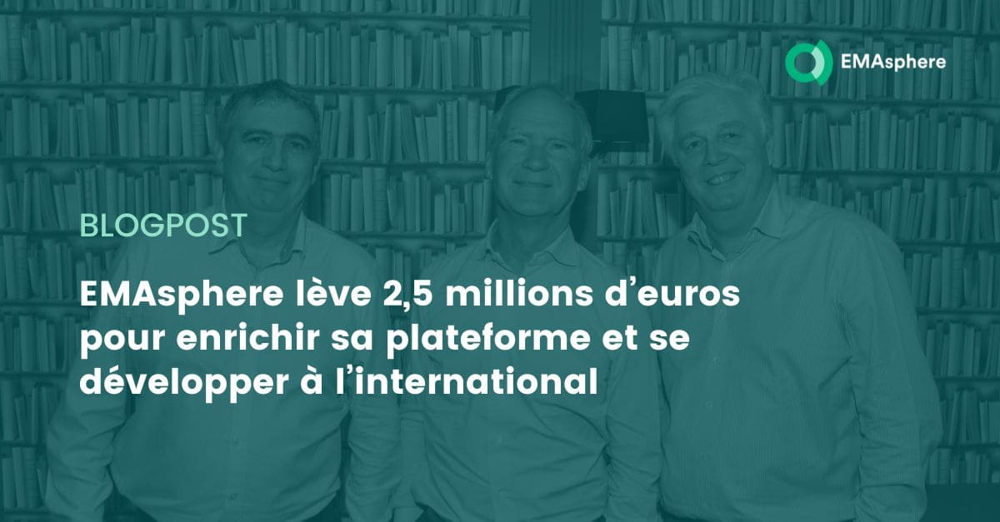
EMASPHERE lève 2,5 millions d’euros pour enrichir sa plateforme et se développer à l’international **Nous poursuivons notre développement et annonçons une levée de fonds de 2,5 millions d’euros auprès d’investisseurs privés et… 2 juillet 2020Lire l’article - 5 raisons pour lesquelles un outil de reporting de gestion est indispensable Par manque d’informations fiables, les dirigeants d’entreprise sont encore trop nombreux à baser leurs décisions sur leur instinct. Celui-ci… 22 juin 2020Lire l’article
-
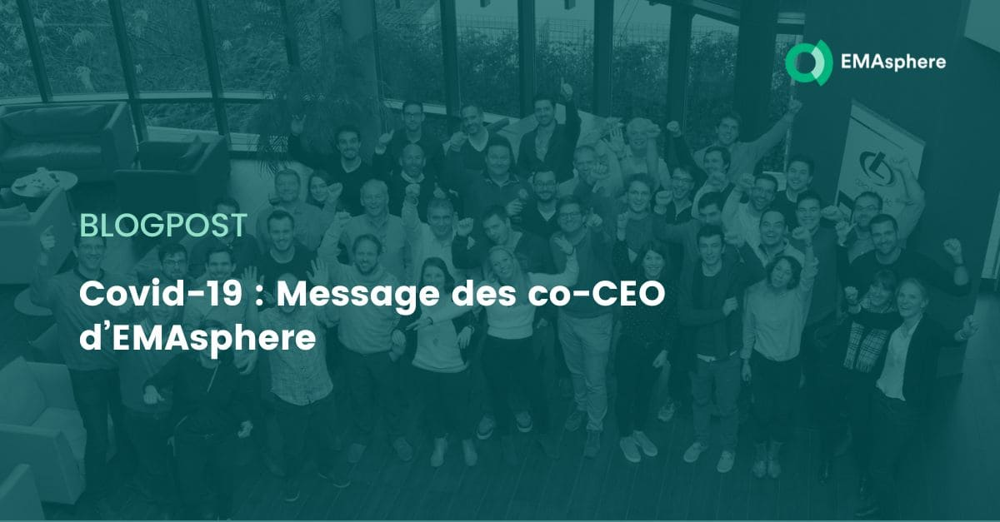
Covid-19 : Message des co-CEO d’EMASPHERE Une semaine après le début d'un nouveau quotidien pour chacun suite à la crise liée au Covid-19, nos deux co-CEO, Didier Vankeerberghen et… 24 mars 2020Lire l’article -
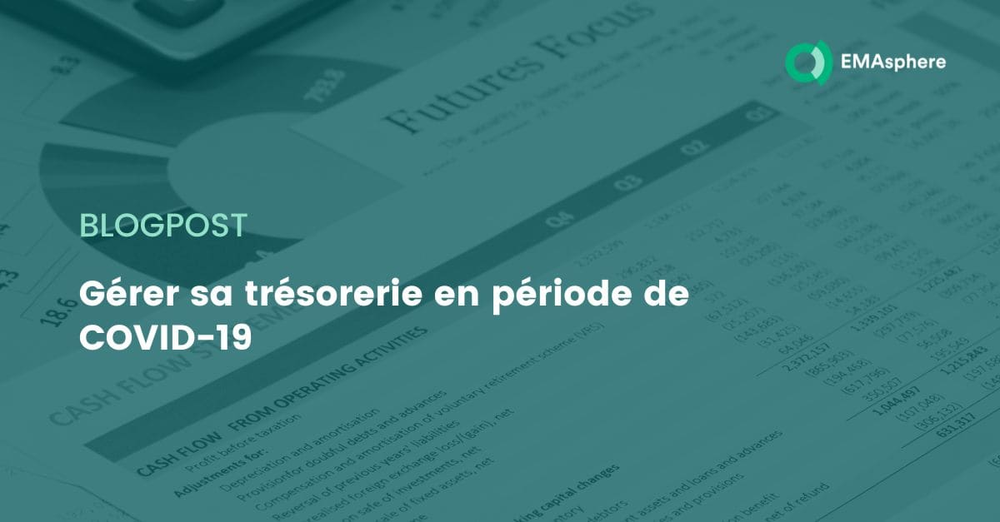
Gérer sa trésorerie en période de COVID-19 Les mesures récentes concernant le Covid-19 ont un impact majeur sur tous les aspects de la vie quotidienne et indéniablement aussi sur les… 23 mars 2020Lire l’article - Le Figaro interviewe Didier Vankeerberghen, co-CEO d'EMASPHERE Découvrez l'interview de notre co-CEO Didier Vankeerberghen à propos de la bonne exploitation des données au sein des PME. 16 janvier 2020Lire l’article
- Les questions à se poser avant de changer de logiciel comptable Le choix d’un logiciel comptable est une décision dont l’impact se fera ressentir pendant plusieurs années. Cela se comprend aisément tant… 26 septembre 2019Lire l’article
-
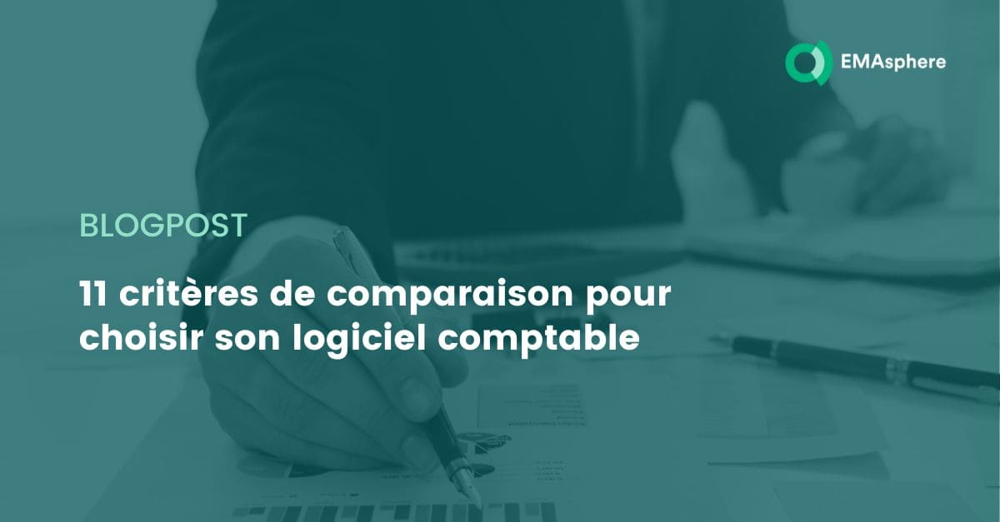
11 critères de comparaison pour choisir son logiciel comptable Le choix d'un logiciel comptable constitue une décision de taille. Son impact se fera ressentir pendant plusieurs années. Cela se comprend… 26 septembre 2019Lire l’article -
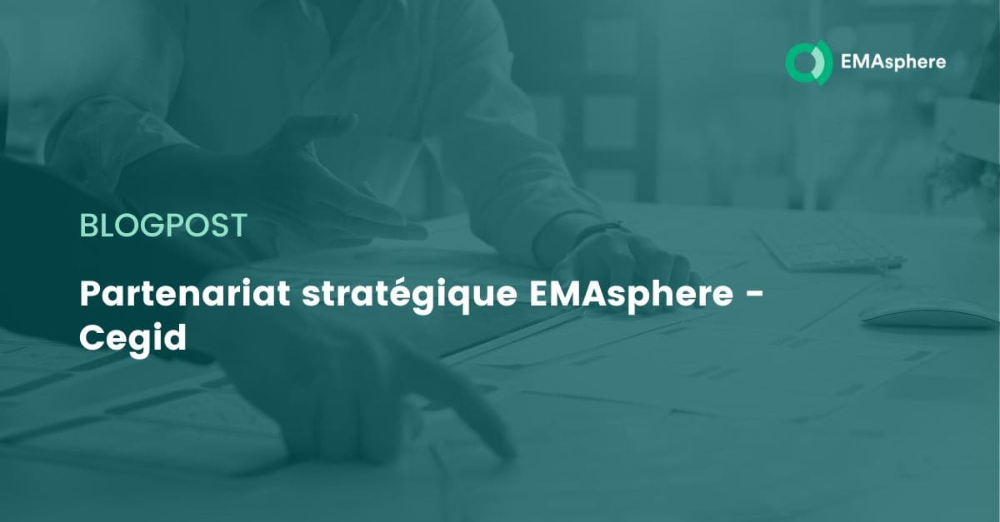
Partenariat stratégique EMASPHERE - Cegid **EMASPHERE, plateforme digitale de tableaux de bord et de prévisions, signe un accord de partenariat stratégique avec Cegid, leader des… 24 septembre 2019Lire l’article - 5 conseils pour optimiser sa trésorerie La trésorerie représente le montant des liquidités dont une entreprise dispose à un instant donné. La trésorerie est indispensable à la… 14 mars 2019Lire l’article
- Comment construire un tableau de bord L’objectif essentiel d’un tableau de bord est de présenter la donnée de façon exacte et contextualisée afin que l’information soit… 11 mars 2019Lire l’article
- Devenir Directeur Financier à temps partagé Vous avez acquis une expérience importante dans le domaine financier et vous songez poursuivre votre carrière en tant que Directeur… 1 mars 2019Lire l’article
-
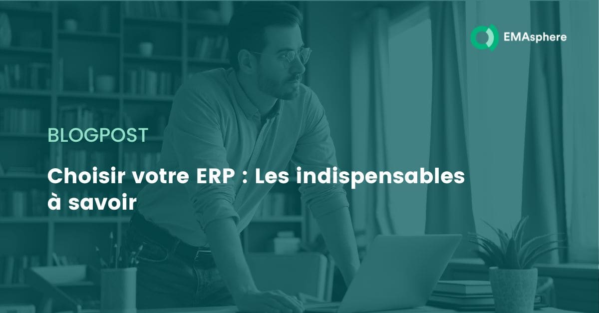
Choisir votre ERP : Les indispensables à savoir La sélection d’un ERP est une décision qui impactera votre organisation pendant plusieurs années tant la plateforme sera au centre de vos… 12 février 2019Lire l’article - EMASPHERE se lance auprès des banques et annonce sa participation à Paris Fintech Forum 2019 **EMASPHERE, logiciel de pilotage de la performance, annonce le lancement de son offre auprès du secteur bancaire et présentera sa solution… 17 janvier 2019Lire l’article
- Grant Thornton : vision sur l’avenir du métier d’expert-comptable Cabinet indépendant de 1.800 collaborateurs, Grant Thornton France accompagne les entreprises à travers des services d'audit, d'expertise… 17 janvier 2019Lire l’article
- EMASPHERE et PwC pour les Entrepreneurs mutualisent leurs forces au service du pilotage de la performance. **Dans une enquête réalisée par PwC auprès de 420 directeurs financiers, Priorités 2018 des directeurs financiers, le pilotage de la… 17 janvier 2019Lire l’article
- Les Priorités du Directeur Financier selon PwC Les priorités 2019 des directions financières ont été révélées par PwC, en partenariat avec la DFCG (association nationale des directeurs… 7 janvier 2019Lire l’article
Aucun article ne correspond.

Envie d’en parler avec un humain ?
Un premier échange, sans engagement, pour voir ce que votre reporting pourrait devenir.